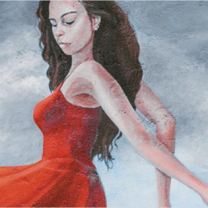

Works

This Finnish artist is renowned for her murals and portraits. Most of her works focus on nature, exploring the interaction between humans and nature. Her works can be found in public spaces and private collections across North America, Europe, and Asia.
The splashed paint on the walls and the train on the ground represent rich artistic elements. The colorful butterflies and the girl dancing with a flute symbolize music. Through color, elements of vitality, joy, and positivity are infused into the murals, depicting the city's transformation process.
French artist Elsa loves nature and enjoys long runs in the countryside. As the creative core of her Hong Kong studio, she and her creative team inject vitality into every wall, bringing visual art experiences to the community through creativity and color.
She created portraits of classic Hollywood legends such as Marilyn Monroe and Sally Tang Bao. These works are primarily in black and white, with colorful backgrounds, clothing, and flowers creating a strong contrast, showcasing the joy and passion brought by art and music in the SOHO district.


A Hong Kong-based mural artist and illustrator, deeply influenced by Japanese pop culture and art. His works use elements such as abstract lines, patterns, calligraphy, color, and collage to create unique and distinctive pieces.
Neil's works blend perfectly with the environment, extending from the ground to the walls, even covering air conditioners and pipes. The unique three-dimensional calligraphy in the painting and a pair of common white parrots from the Western District transport us into a vibrant and colorful forest landscape.